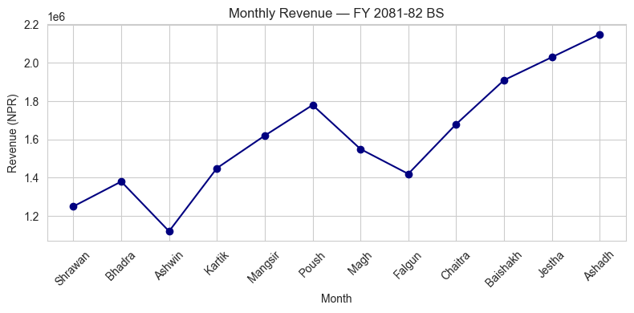
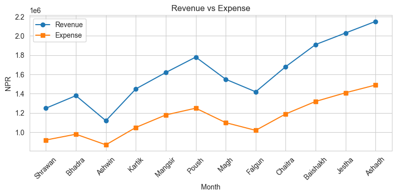
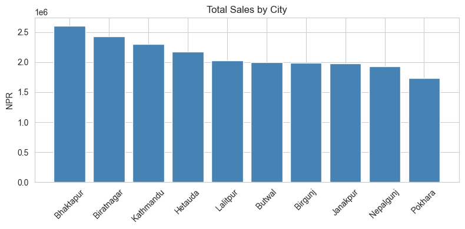
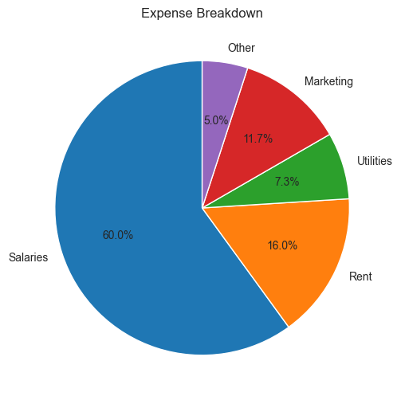
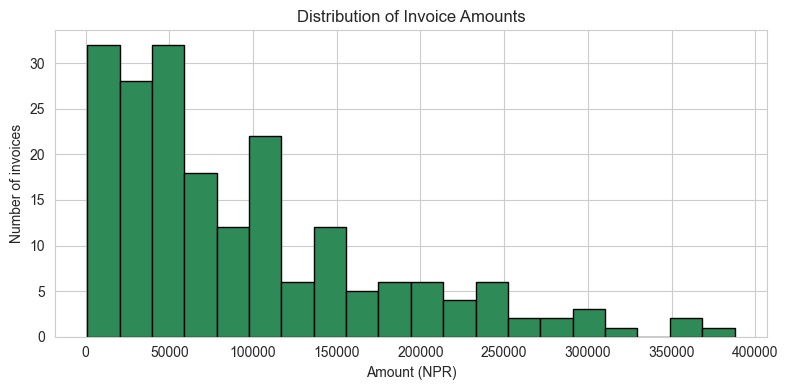
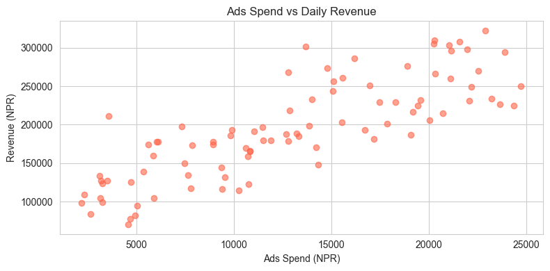
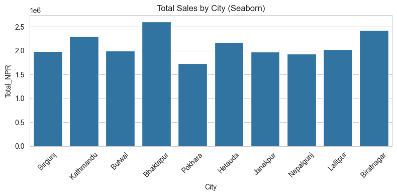
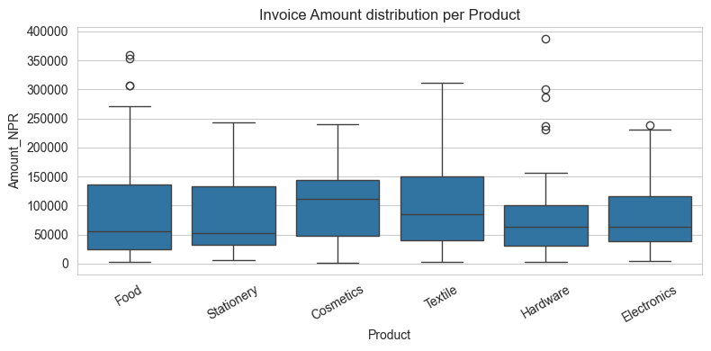
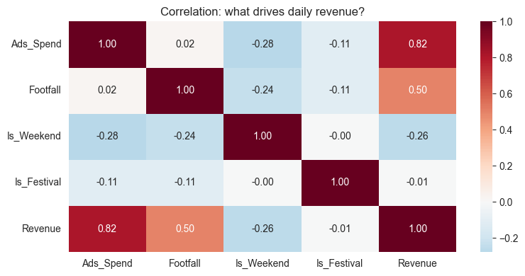
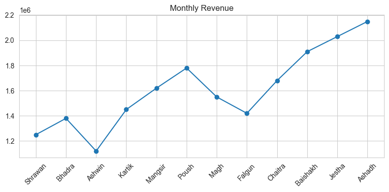

Notebook 3 — Matplotlib & Seaborn for CA Professionals
Goal: Turn raw financial numbers into clean, presentable charts.
You will learn:
- Why charts matter for reporting
- Line charts (revenue trends)
- Bar charts (department / city comparisons)
- Pie chart (expense breakdown)
- Histogram (distribution of invoice amounts)
- Scatter plot (relationship between two columns)
- Seaborn basics — prettier plots with one line
- Box plot (spotting outliers)
- Heatmap (correlation between metrics)
- Saving a chart as an image
- A short mini-project
1. Why visualise data?
A table of 200 invoices is overwhelming. A chart shows the story instantly — trends, outliers, top customers, seasonality. Auditors, managers and clients all understand a chart faster than a spreadsheet.
We will use two libraries:
| Library | When to use it |
|---|---|
matplotlib |
The foundation — full control, every kind of plot |
seaborn |
A friendly layer on top — prettier defaults, fewer lines of code |
import pandas as pd
import numpy as np
import matplotlib.pyplot as plt
import seaborn as sns
# Nicer default style
sns.set_style("whitegrid")
plt.rcParams["figure.figsize"] = (8, 4)
print("ready")
ready
2. Line Chart — showing a trend over time
Best for time series: monthly revenue, daily price, quarterly profit.
sales = pd.read_csv("data/monthly_sales.csv")
plt.plot(sales["Month"], sales["Revenue_NPR"], marker="o", color="navy")
plt.title("Monthly Revenue — FY 2081-82 BS")
plt.xlabel("Month")
plt.ylabel("Revenue (NPR)")
plt.xticks(rotation=45)
plt.tight_layout()
plt.show()

Practice 1
Make a line chart of Expense_NPR against Month from the same sales DataFrame. Use a different colour and add a title.
# Your turn:
Show solution
plt.plot(sales["Month"], sales["Expense_NPR"], marker="s", color="darkred")
plt.title("Monthly Expense — FY 2081-82 BS")
plt.xlabel("Month")
plt.ylabel("Expense (NPR)")
plt.xticks(rotation=45)
plt.tight_layout()
plt.show()
3. Multiple lines on one chart
Just call plt.plot() twice (or more) before plt.show().
plt.plot(sales["Month"], sales["Revenue_NPR"], marker="o", label="Revenue")
plt.plot(sales["Month"], sales["Expense_NPR"], marker="s", label="Expense")
plt.title("Revenue vs Expense")
plt.xlabel("Month")
plt.ylabel("NPR")
plt.xticks(rotation=45)
plt.legend()
plt.tight_layout()
plt.show()

4. Bar Chart — comparing categories
invoices = pd.read_csv("data/invoices.csv")
city_sales = invoices.groupby("City")["Total_NPR"].sum().sort_values(ascending=False)
plt.bar(city_sales.index, city_sales.values, color="steelblue")
plt.title("Total Sales by City")
plt.ylabel("NPR")
plt.xticks(rotation=45)
plt.tight_layout()
plt.show()

Practice 2
Group invoices by Product (sum of Amount_NPR). Make a bar chart of the result.
# Your turn:
Show solution
prod = invoices.groupby("Product")["Amount_NPR"].sum().sort_values(ascending=False)
plt.bar(prod.index, prod.values, color="orange")
plt.title("Sales by Product")
plt.ylabel("Amount (NPR)")
plt.xticks(rotation=30)
plt.tight_layout()
plt.show()
5. Pie Chart — share of the total
Pie charts are good when you want to show how a total is split into parts.
# Expense breakdown (made up example)
heads = ["Salaries", "Rent", "Utilities", "Marketing", "Other"]
amounts = [1800000, 480000, 220000, 350000, 150000]
plt.figure(figsize=(6, 6))
plt.pie(amounts, labels=heads, autopct="%1.1f%%", startangle=90)
plt.title("Expense Breakdown")
plt.show()

Practice 3
Group invoices by Payment_Status (count of invoices). Make a pie chart showing what % are Paid / Pending / Overdue.
# Your turn:
Show solution
status = invoices["Payment_Status"].value_counts()
plt.figure(figsize=(6,6))
plt.pie(status.values, labels=status.index, autopct="%1.1f%%", startangle=90)
plt.title("Invoice Payment Status")
plt.show()
6. Histogram — distribution of one column
Useful to see how amounts are spread: are most invoices small? Are salaries clustered?
plt.hist(invoices["Amount_NPR"], bins=20, color="seagreen", edgecolor="black")
plt.title("Distribution of Invoice Amounts")
plt.xlabel("Amount (NPR)")
plt.ylabel("Number of invoices")
plt.tight_layout()
plt.show()

Practice 4
Load data/payroll.csv and plot a histogram of Net_Salary.
# Your turn:
Show solution
pay = pd.read_csv("data/payroll.csv")
plt.hist(pay["Net_Salary"], bins=10, color="purple", edgecolor="black")
plt.title("Distribution of Net Salaries")
plt.xlabel("NPR")
plt.ylabel("Employees")
plt.show()
7. Scatter Plot — relationship between two columns
Use this when you want to see: does X go up when Y goes up?
daily = pd.read_csv("data/daily_revenue.csv")
plt.scatter(daily["Ads_Spend"], daily["Revenue"], alpha=0.6, color="tomato")
plt.title("Ads Spend vs Daily Revenue")
plt.xlabel("Ads Spend (NPR)")
plt.ylabel("Revenue (NPR)")
plt.tight_layout()
plt.show()

Practice 5
Make a scatter plot of Footfall (x-axis) vs Revenue (y-axis) from the daily DataFrame.
# Your turn:
Show solution
plt.scatter(daily["Footfall"], daily["Revenue"], alpha=0.6, color="teal")
plt.xlabel("Footfall")
plt.ylabel("Revenue (NPR)")
plt.title("Footfall vs Revenue")
plt.show()
8. Seaborn — same plots, simpler code
Seaborn is built on top of matplotlib. You pass it the DataFrame directly.
sns.barplot(data=invoices, x="City", y="Total_NPR", estimator=sum, errorbar=None)
plt.title("Total Sales by City (Seaborn)")
plt.xticks(rotation=45)
plt.tight_layout()
plt.show()

sns.histplot(data=invoices, x="Amount_NPR", bins=20, kde=True, color="seagreen")
plt.title("Invoice Amount — distribution with KDE curve")
plt.tight_layout()
plt.show()
9. Box Plot — spotting outliers
The box shows the middle 50% of data. The line in the middle is the median. Dots beyond the "whiskers" are outliers — unusually high or low values that may need investigation.
sns.boxplot(data=invoices, x="Product", y="Amount_NPR")
plt.title("Invoice Amount distribution per Product")
plt.xticks(rotation=30)
plt.tight_layout()
plt.show()

Practice 6
Make a box plot of Net_Salary (y-axis) per Department (x-axis), using the pay DataFrame.
# Your turn:
Show solution
sns.boxplot(data=pay, x="Department", y="Net_Salary")
plt.title("Net Salary per Department")
plt.tight_layout()
plt.show()
10. Heatmap — correlation between numeric columns
A correlation heatmap shows how strongly two columns move together. Values close to +1 mean they move together; close to −1 mean opposite; close to 0 means no relationship.
corr = daily[["Ads_Spend", "Footfall", "Is_Weekend", "Is_Festival", "Revenue"]].corr()
sns.heatmap(corr, annot=True, cmap="RdBu_r", center=0, fmt=".2f")
plt.title("Correlation: what drives daily revenue?")
plt.tight_layout()
plt.show()

11. Saving a chart to a file
plt.plot(sales["Month"], sales["Revenue_NPR"], marker="o")
plt.title("Monthly Revenue")
plt.xticks(rotation=45)
plt.tight_layout()
plt.savefig("revenue_chart.png", dpi=150) # ← saves to disk
plt.show()
print("Saved revenue_chart.png")

Saved revenue_chart.png
12. Mini-Project — Client-style Sales Dashboard
Using data/invoices.csv and data/monthly_sales.csv, make these 4 charts (one after another):
- Line chart — monthly Revenue and Expense on one chart (with legend).
- Bar chart — total
Total_NPRper City (sorted, biggest first). - Pie chart — share of invoices by
Payment_Status. - Box plot —
Amount_NPRperProduct.
inv = pd.read_csv("data/invoices.csv")
sl = pd.read_csv("data/monthly_sales.csv")
# Your code here
Show solution
# 1. Line chart
plt.plot(sl["Month"], sl["Revenue_NPR"], marker="o", label="Revenue")
plt.plot(sl["Month"], sl["Expense_NPR"], marker="s", label="Expense")
plt.xticks(rotation=45); plt.legend(); plt.title("Revenue vs Expense")
plt.tight_layout(); plt.show()
# 2. Bar chart
city = inv.groupby("City")["Total_NPR"].sum().sort_values(ascending=False)
plt.bar(city.index, city.values, color="steelblue")
plt.xticks(rotation=45); plt.title("Total Sales by City")
plt.tight_layout(); plt.show()
# 3. Pie chart
st = inv["Payment_Status"].value_counts()
plt.figure(figsize=(6,6))
plt.pie(st.values, labels=st.index, autopct="%1.1f%%")
plt.title("Invoice Status"); plt.show()
# 4. Box plot
sns.boxplot(data=inv, x="Product", y="Amount_NPR")
plt.xticks(rotation=30); plt.title("Invoice Amount per Product")
plt.tight_layout(); plt.show()
What's next?
You can now communicate findings visually. Next we go back to data quality —
in 04_Data_Cleaning we will learn how to clean messy real-world data before it can be plotted or modelled.